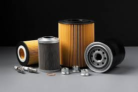

Filtros Automotrices
Filtros de aire, aceite y combustible para varias marcas de autos.
Empresa dedicada a la venta de refacciones automotrices para vehículos nacionales e importados.
Brindamos atención personalizada y productos de calidad para talleres mecánicos y público en general.
Ubicación: Corregidora, Querétaro.
Aquí algunos de los **productos que puedes encontrar** en nuestra refaccionaria:
Filtros de aire, aceite y combustible para varias marcas de autos.
Pastillas, discos y accesorios para sistemas de freno de autos.
Bujías, cables y accesorios relacionados con el sistema de encendido.
Para mayor información sobre nuestros productos y disponibilidad, visita nuestra sucursal o contáctanos directamente.
Teléfono: 442 228 1765
Correo: rasch_candiles@hotmail.com